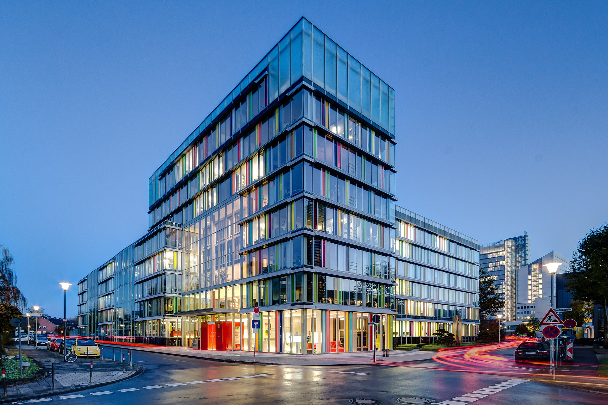
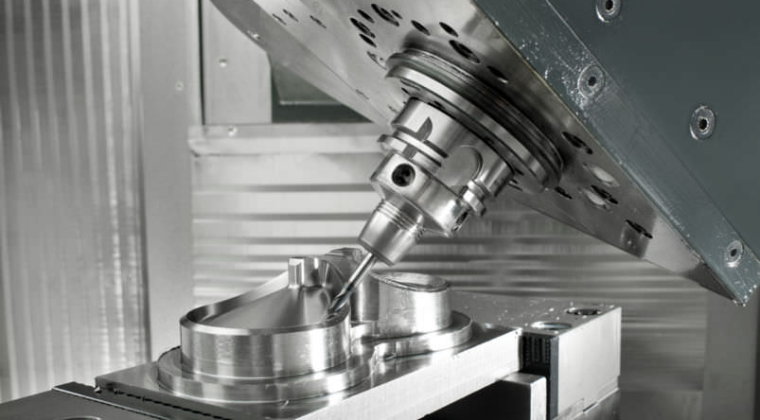
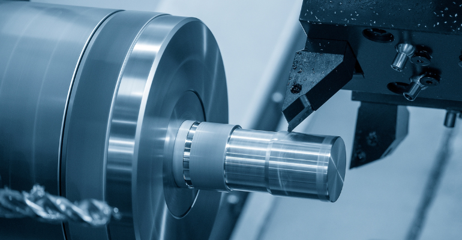
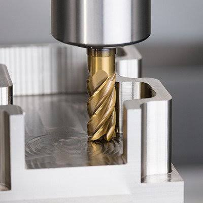

INDUTECH Ltda

>
A INDUTECH Ltda. foi fundada em 2002, atuando no setor de mecânica de usinagem e fabricação de peças metálicas. Inicialmente, a empresa possuía uma estrutura pequena e trabalhava com serviços de torno, fresamento, furação e fabricação de peças sob medida.
Com o passar dos anos, a INDUTECH cresceu e investiu em máquinas CNC, novas tecnologias e capacitação profissional, ampliando seus serviços e conquistando clientes de diferentes setores industriais.
Atualmente, a empresa busca oferecer qualidade, precisão e agilidade, além de modernizar continuamente seus processos para atender às necessidades de seus clientes.
Missão
Oferecer serviços de usinagem com qualidade, precisão e eficiência, atendendo às necessidades de nossos clientes.
Visão
Ser reconhecida como uma empresa de referência em usinagem.
Valores
- Qualidade
- Precisão
- Compromisso com o cliente
- Segurança
- Ética
- Inovação
Serviços

Usinagem CNC

Torneamento de Peças

Fresamento de Peças
Parceiros
Etapas do Processo Industrial
- Recebimento e análise do desenho técnico
- Seleção da matéria-prima
- Preparação e configuração da máquina
- Usinagem da peça
- Inspeção e controle de qualidade
Contato
Telefone: (16) 1234-4267
E-mail: contato@indutech.com.br
Endereço: Avenida Presidente Vargas, 1250 - Ribeirão Preto - SP
Horário de atendimento: Segunda a sexta-feira, das 8h às 20h.